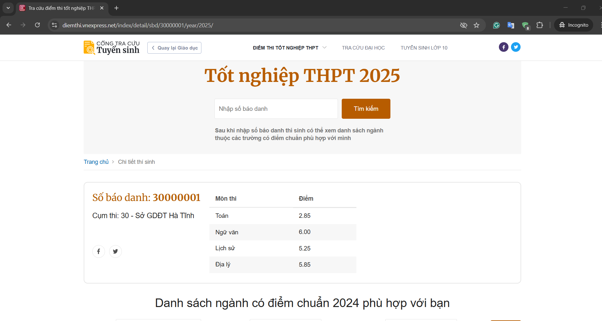

VnExpress Điểm Thi THPTQG Scraper
Website gốc:

Giao diện tra cứu điểm thi THPTQG 2025 trên VnExpress
Mã nguồn Python:
import requests
import requests
from bs4 import BeautifulSoup
import csv
import time
import random
import os
START_SBD = 30000001
END_SBD = 39999999
YEAR = 2025
MAX_ERRORS = 3
OUTPUT_FILE = 'diemthi_thptqg_2025.csv'
headers = {
'User-Agent': 'Mozilla/5.0 (Windows NT 10.0; Win64; x64) AppleWebKit/537.36 (KHTML, like Gecko) Chrome/120.0.0.0 Safari/537.36',
'Accept-Language': 'vi-VN,vi;q=0.9,en-US;q=0.8,en;q=0.7',
}
all_subjects = set()
rows = []
error_count = 0
def get_student_data(sbd):
url = f"https://diemthi.vnexpress.net/index/detail/sbd/{sbd}/year/{YEAR}"
print(f"Lấy SBD: {sbd}")
try:
resp = requests.get(url, headers=headers, timeout=10)
if resp.status_code != 200:
return None
soup = BeautifulSoup(resp.text, 'html.parser')
info = soup.find('div', class_='o-detail-thisinh__info')
diemthi = soup.find('div', class_='o-detail-thisinh__diemthi')
if not info or not diemthi:
return None
sbd_tag = info.find('h2', class_='o-detail-thisinh__sbd')
sbd_val = sbd_tag.find('strong').text.strip() if sbd_tag else str(sbd)
table = diemthi.find('table', class_='e-table')
if not table:
return None
tbody = table.find('tbody')
subjects = {}
for tr in tbody.find_all('tr'):
tds = tr.find_all('td')
if len(tds) == 2:
mon = tds[0].text.strip()
diem = tds[1].text.strip()
subjects[mon] = diem
return {
'SBD': sbd_val,
'Subjects': subjects
}
except Exception:
return None
def write_csv(rows, all_subjects):
fieldnames = ['SBD'] + sorted(all_subjects)
with open(OUTPUT_FILE, 'w', newline='', encoding='utf-8-sig') as f:
writer = csv.DictWriter(f, fieldnames=fieldnames)
writer.writeheader()
for row in rows:
for mon in all_subjects:
if mon not in row:
row[mon] = ''
writer.writerow(row)
def append_csv(row, all_subjects, write_header=False):
fieldnames = ['SBD'] + sorted(all_subjects)
with open(OUTPUT_FILE, 'a', newline='', encoding='utf-8-sig') as f:
writer = csv.DictWriter(f, fieldnames=fieldnames)
if write_header:
writer.writeheader()
for mon in all_subjects:
if mon not in row:
row[mon] = ''
writer.writerow(row)
# File exist or not
file_exists = os.path.exists(OUTPUT_FILE)
for sbd in range(START_SBD, END_SBD + 1):
data = get_student_data(sbd)
if data is None:
error_count += 1
if error_count >= MAX_ERRORS:
print(f"Dừng lại ở SBD {sbd} do gặp {MAX_ERRORS} lần lỗi liên tiếp.")
break
else:
error_count = 0
new_subjects = set(data['Subjects'].keys()) - all_subjects
all_subjects.update(data['Subjects'].keys())
row = {'SBD': data['SBD']}
row.update(data['Subjects'])
rows.append(row)
# If new subjects found, update the entire CSV file with new header
if new_subjects and len(rows) > 1:
print(f"Phát hiện môn mới: {new_subjects}. Đang cập nhật lại file CSV...")
write_csv(rows, all_subjects)
else:
# If no new subjects found, append the row to the existing CSV
append_csv(row, all_subjects, write_header=(not file_exists and len(rows) == 1))
file_exists = True
time.sleep(random.uniform(0.2, 0.7))Kết quả thu được:

Dữ liệu điểm thi THPTQG được trích xuất và lưu vào file CSV với các cột: SBD, Toán, Ngữ văn, Lịch sử, Địa lý, Vật lý, Hóa học, Sinh học...
Công nghệ sử dụng:
Kỹ năng chính
Python Programming
Selenium, BeautifulSoup, Pandas, Requests
Web Scraping
Data extraction, Browser automation, API integration
Data Processing
CSV, Excel, JSON, Data cleaning & transformation
Wireshark
Network protocol analysis, Packet capturing, Traffic inspection